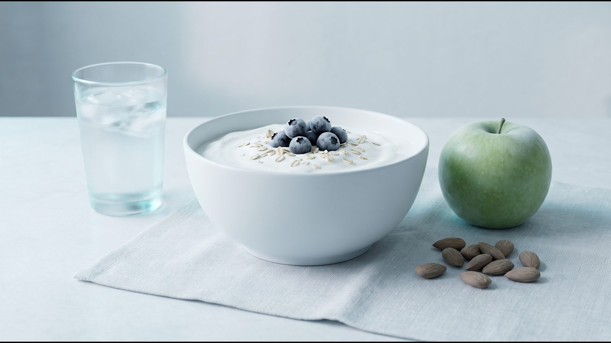

Вага стоїть на місці: чому не вдається схуднути і що перевірити

Вага стоїть: нормальне коливання чи справжнє плато
Якщо вага стоїть на місці кілька днів, це ще не плато: число на вагах щодня зсуває вода, зокрема та, що зберігається разом із глікогеном (запасом вуглеводів) у печінці й м'язах. Плато означає, що середня вага не знижується тижнями за того самого харчування і руху. Тоді причину шукають серед восьми чинників нижче і ведуть щоденник для лікаря.
У дослідженні Khosla і Billewicz (Br J Nutr, 1964) типове відхилення ваги від її тренду становило близько 0,5 %, а за добу рідко змінювалася більш ніж на 1,5 %. Є й тижневий ритм: на вихідних вага трохи зростає, у будні знижується, в середньому на 0,35 % (Turicchi, PLoS One, 2020). Глікоген зберігається з водою (3–4 частини води на одну частину глікогену, Kreitzman, 1992), тому зміна кількості вуглеводів зсуває вагу навіть за тієї самої калорійності (Hall, Lancet, 2011).
Солона їжа може тимчасово затримувати рідину і давати набряки (NHS), але точних даних, на скільки саме це змінює вагу, немає. У дні менструації вага в середньому була приблизно на 0,5 кг вищою, ніж у перший тиждень циклу, переважно через позаклітинну воду (Kanellakis, Am J Hum Biol, 2023), проте від циклу до циклу картина різниться (Watson і Robinson, 1965), а в частині досліджень змін ваги не знайшли (Faratian, 1984). Дні циклу і солону їжу позначайте в щоденнику.
Загальноприйнятого порогу, після скількох тижнів без змін уже можна говорити про плато, немає (Horn, Clin Obes, 2025); в аналізі досліджень тирзепатиду, наприклад, плато вважали зміну ваги менш ніж на 5 % за 12 тижнів і надалі. Тож дивіться на тенденцію за кілька тижнів. У клінічних дослідженнях схуднення вага зазвичай виходить на плато приблизно через 6 місяців (метааналіз Franz, J Am Diet Assoc, 2007); чому вага стоїть на місці саме тоді, пояснює розділ «Адаптація метаболізму».
Самоперевірка: 8 питань
Чому я не худну? Відповідайте «так» або «ні»: кожне питання веде до розділу нижче.
- Чи зважуєтеся ви в однакових умовах і дивитеся на середню вагу за тиждень? (розділ вище)
- Чи записуєте ви все з'їдене і випите? («Недооцінені калорії»)
- Чи схудли ви вже помітно і чи триває схуднення кілька місяців? («Адаптація метаболізму»)
- Чи змінювалися нещодавно кількість вуглеводів і солі в раціоні або фаза циклу? («Затримка рідини, цикл, сон і стрес»)
- Чи спите ви менше, ніж зазвичай, і чи був останнім часом сильний стрес? (той самий розділ)
- Чи почали ви за останні місяці нові ліки або чи змінював лікар дозу наявних? («Ліки та гормональні стани»)
- Чи є у вас гіпотиреоз, синдром полікістозних яєчників, переддіабет чи діабет, і коли ви востаннє робили аналізи? (той самий розділ)
- Чи вам понад 40, чи триває менопаузальний перехід, чи народжували ви нещодавно? («Вага стоїть після 40 і після пологів»)
Недооцінені калорії
Коли не йде вага, спершу перевірте точність записів. У дослідженні Lichtman (NEJM, 1992) 10 людей з ожирінням, які вважали себе «стійкими до дієт», мали нормальну витрату енергії (у межах 5 % від очікуваної), але недооцінювали з'їдене в середньому на 47 % і переоцінювали свою активність на 51 %. Йдеться не про нечесність: самозвіт неточний, тому щоденник має бути докладним.
У записах легко пропустити солодкі напої і соки, алкоголь, олію, соуси, «скуштувати» під час готування і перекуси на ходу. Як вести щоденник:
- записуйте одразу після їжі, а не ввечері з пам'яті;
- кілька днів зважуйте порції кухонними вагами, щоб навчитися оцінювати їх на око;
- напої, соуси й олію пишіть окремими рядками або фотографуйте кожну тарілку.
Орієнтовну потребу покаже калькулятор калорій.
Адаптація метаболізму
Адаптація метаболізму означає, що під час схуднення організм витрачає менше енергії: меншому тілу її потрібно менше, тож той самий раціон з часом дає менший дефіцит. Саме цього не враховує популярне правило «500 ккал на день = 0,5 кг на тиждень»: Hall (Lancet, 2011) називає його помилковим, бо воно завищує прогноз, і що довше, то більша похибка.
За моделлю Hall, якщо чоловік вагою 100 кг із сидячим способом життя стабільно з'їдає на 480 ккал на добу менше, його вага наближається до нової рівноваги, близько 75 кг: половину шляху він проходить приблизно за рік, 95 % — за 3 роки. Водночас типове плато через 6–8 місяців модель пояснює насамперед тим, що з часом людям важче тримати початковий раціон, тому спершу перевірте щоденник.
У 14 учасників телешоу The Biggest Loser через 6 років витрата енергії в спокої була приблизно на 500 ккал на добу нижчою за очікувану для їхньої ваги і складу тіла (Fothergill і Hall, Obesity, 2016). Але це екстремальна вибірка (мінус 58 кг за 30 тижнів шоу), тож на звичайне схуднення ці цифри не переносяться.
Затримка рідини, цикл, сон і стрес
Про воду, сіль і цикл ішлося на початку статті; затримку рідини дає й нелікований гіпотиреоз (розділ нижче).
Недосип посилює голод і змінює рівень гормонів апетиту (Spiegel, 2004); докладніше в статті постійно хочеться їсти. Стрес пов'язаний із набором ваги дуже слабко: у метааналізі 14 когортних досліджень (Wardle, Obesity, 2011) більшість аналізів значущого зв'язку не знайшли. Тривалий стрес усе одно записуйте в щоденник.
Раз на тиждень міряйте талію: NICE NG246 радить оцінювати її разом з ІМТ як показник жиру на животі. Якщо вага стоїть, а талія зменшується, зміни є, просто ваги їх не показують.
Ліки та гормональні стани
Гіпотиреоз, СПКЯ, інсулінорезистентність
Гіпотиреоз — знижена функція щитоподібної залози. За Американською тиреоїдною асоціацією (ATA), з ним зазвичай пов'язано 2,3–4,5 кг ваги, переважно солі й води, а після лікування здатність схуднути така сама, як у людей без хвороб щитоподібної залози. Якщо інші симптоми минули, а вага ні, набір, за ATA, навряд чи був лише через щитоподібну залозу.
Синдром полікістозних яєчників (СПКЯ) Комісія Lancet (2025) включила разом з ановуляцією і рідкими менструаціями до ознак клінічного ожиріння, а міжнародна настанова з СПКЯ 2023 року наголошує на його метаболічних наслідках і здоровому способі життя.
Інсулінорезистентність, за визначенням NIDDK, — стан, коли клітини м'язів, жирової тканини і печінки погано реагують на інсулін, гормон підшлункової залози. Вона може призводити до підвищення глюкози в крові і набору ваги; ризик підвищують надмірна вага, великий обхват талії, СПКЯ і деякі ліки. Симптомів зазвичай немає, а окремий тест на неї використовують переважно в дослідженнях, тому лікар дивиться на глюкозу і глікований гемоглобін (HbA1c).
Ліки, що можуть підвищувати вагу
Настанова Endocrine Society (2015) пов'язує з набором ваги, зокрема, такі ліки і для багатьох описує нейтральніші варіанти:
- цукрознижувальні: інсулін, похідні сульфонілсечовини, піоглітазон;
- антидепресанти: пароксетин, амітриптилін, міртазапін;
- антипсихотики: оланзапін, клозапін, кветіапін, рисперидон;
- протисудомні: вальпроєва кислота, габапентин, прегабалін, карбамазепін (а топірамат і зонісамід, навпаки, знижують вагу);
- глюкокортикоїди, ін'єкційні гормональні контрацептиви, антиретровірусна терапія, частина β-блокаторів і антигістамінних препаратів.
Скасовувати чи замінювати препарат самостійно не можна: це рішення лікаря, який його призначив; якщо вага почала рости після нового препарату, покажіть йому дату старту в щоденнику.
Вага стоїть після 40 і після пологів
NHS серед чинників, через які важче тримати вагу, називає вік понад 55 років, менопаузу і перименопаузу. У менопаузальному переході змінюється насамперед склад тіла (дослідження SWAN), тому зміни видно радше за талією, ніж на вагах; докладніше — у статті як почати схуднення.
Після пологів багато залежить від того, скільки жінка набрала під час вагітності. У метааналізі 17 досліджень (Rong, Public Health Nutr, 2015) за надмірного набору ваги жінки утримували після пологів у середньому на 3,2 кг більше, ніж за адекватного, і визначав це саме набір ваги, а не ІМТ до вагітності. Дефіцит калорій під час годування груддю обговорюйте з лікарем.
Щоденник на 14 днів
Щоденник дає лікарю дані замість відчуття «не можу схуднути, нічого не допомагає». Ведіть його 14 днів поспіль, не змінюючи режим спеціально під записи: вагу зранку в однакових умовах, обхват талії на 1-й, 7-й і 14-й день, усе з'їдене і випите з приблизними порціями, сон, кроки, самопочуття, стрес, день циклу і нові ліки.
| День | Вага, кг | Сон, год | Їжа і напої | Кроки, тренування | Самопочуття, стрес, цикл, ліки |
|---|---|---|---|---|---|
| 1 | |||||
| 2 | |||||
| 3 | |||||
| 4 | |||||
| 5 | |||||
| 6 | |||||
| 7 | |||||
| 8 | |||||
| 9 | |||||
| 10 | |||||
| 11 | |||||
| 12 | |||||
| 13 | |||||
| 14 |
На консультації лікар порівняє середню вагу двох тижнів, подивиться, чи збігаються стрибки із сіллю, циклом, недосипом чи ліками, і вирішить, чи потрібні аналізи.

Часті запитання
Чому вага стоїть два тижні?
За два тижні плато не визначити: вага щодня коливається до 1,5 %, на неї впливають вуглеводи, сіль, цикл і сон, а загальноприйнятого порогу для плато немає. Дайте відповідь на 8 питань вище і заповніть щоденник; якщо середня вага другого тижня не змінилася, обговоріть записи з лікарем.
Чи може бути плато на самому початку?
У перші тижні вага часто знижується швидше, частково через воду, що виходить разом із глікогеном (Kreitzman, 1992), а потім темп сповільнюється, і це схоже на плато. Водночас у дослідженнях із контрольованим харчуванням вага перші 6 місяців знижується майже рівномірно (Hall, Lancet, 2011). Якщо вага не зрушила з перших тижнів, перевірте щоденник харчування і нові ліки.
Які аналізи здати, якщо не худну?
Перелік визначає лікар; базовий набір за EASO (2019) — глюкоза натще, ліпідограма, печінкові проби, креатинін, далі ТТГ. Як підготуватися — у статті підготовка до консультації ендокринолога.
Чи допоможе голодування?
Дієти менше 800 ккал на добу NICE NG246 допускає лише у спеціалізованій службі за медичної потреби, не як довгострокову стратегію, і попереджає про повернення ваги, закрепи, втому і випадіння волосся; NIDDK додає ризик жовчних каменів. Причину плато, яку покаже щоденник, голодування не усуває.
Що далі
Заповніть щоденник 14 днів і обговоріть його з ендокринологом: лікар відрізнить коливання від плато і вирішить, чи потрібні аналізи. Консультація в Avelis онлайн і безкоштовна.
Джерела
- Khosla T, Billewicz WZ. Measurement of change in body-weight. Br J Nutr, 1964. https://doi.org/10.1079/BJN19640022
- Turicchi J et al. Weekly, seasonal and holiday body weight fluctuation patterns among individuals engaged in a European multi-centre behavioural weight loss maintenance intervention. PLoS One, 2020. https://doi.org/10.1371/journal.pone.0232152
- Kreitzman SN et al. Glycogen storage: illusions of easy weight loss, excessive weight regain, and distortions in estimates of body composition. Am J Clin Nutr, 1992. https://doi.org/10.1093/ajcn/56.1.292S
- Hall KD et al. Quantification of the effect of energy imbalance on bodyweight. Lancet, 2011. https://doi.org/10.1016/S0140-6736(11)60812-X
- NHS. Swollen ankles, feet and legs (oedema), 2026. https://www.nhs.uk/conditions/oedema/
- Kanellakis S et al. Changes in body weight and body composition during the menstrual cycle. Am J Hum Biol, 2023. https://doi.org/10.1002/ajhb.23951
- Watson PE, Robinson MF. Variations in body-weight of young women during the menstrual cycle. Br J Nutr, 1965. https://doi.org/10.1079/bjn19650023
- Faratian B et al. Premenstrual syndrome: weight, abdominal swelling, and perceived body image. Am J Obstet Gynecol, 1984. https://doi.org/10.1016/s0002-9378(84)80016-2
- Horn DB et al. Time to weight plateau with tirzepatide treatment in the SURMOUNT-1 and SURMOUNT-4 clinical trials. Clin Obes, 2025. https://doi.org/10.1111/cob.12734
- Franz MJ et al. Weight-loss outcomes: a systematic review and meta-analysis of weight-loss clinical trials with a minimum 1-year follow-up. J Am Diet Assoc, 2007. https://doi.org/10.1016/j.jada.2007.07.017
- Lichtman SW et al. Discrepancy between self-reported and actual caloric intake and exercise in obese subjects. N Engl J Med, 1992. https://doi.org/10.1056/NEJM199212313272701
- Fothergill E, … Hall KD. Persistent metabolic adaptation 6 years after «The Biggest Loser» competition. Obesity, 2016. https://doi.org/10.1002/oby.21538
- Spiegel K et al. Brief communication: sleep curtailment in healthy young men is associated with decreased leptin levels, elevated ghrelin levels, and increased hunger and appetite. Ann Intern Med, 2004. https://doi.org/10.7326/0003-4819-141-11-200412070-00008
- Wardle J et al. Stress and adiposity: a meta-analysis of longitudinal studies. Obesity, 2011. https://doi.org/10.1038/oby.2010.241
- NICE. Overweight and obesity management (NG246), 2025, updated 2026. https://www.nice.org.uk/guidance/ng246
- American Thyroid Association. Thyroid and Weight. https://www.thyroid.org/thyroid-and-weight/
- Rubino F et al. Definition and diagnostic criteria of clinical obesity. Lancet Diabetes Endocrinol, 2025. https://doi.org/10.1016/S2213-8587(24)00316-4
- Teede HJ et al. Summary of the 2023 international evidence-based guideline for the assessment and management of polycystic ovary syndrome. Med J Aust, 2024. https://doi.org/10.5694/mja2.52432
- NIDDK. Insulin Resistance & Prediabetes, 2025. https://www.niddk.nih.gov/health-information/diabetes/overview/what-is-diabetes/prediabetes-insulin-resistance
- Apovian CM et al. Pharmacological management of obesity: an Endocrine Society clinical practice guideline. J Clin Endocrinol Metab, 2015. https://doi.org/10.1210/jc.2014-3415
- NHS. Overweight and obesity in adults, 2026. https://www.nhs.uk/conditions/overweight-and-obesity/
- Greendale GA et al. Changes in body composition and weight during the menopause transition (SWAN). JCI Insight, 2019. https://doi.org/10.1172/jci.insight.124865
- Rong K et al. Pre-pregnancy BMI, gestational weight gain and postpartum weight retention: a meta-analysis of observational studies. Public Health Nutr, 2015. https://doi.org/10.1017/S1368980014002523
- Durrer Schutz D et al. European Practical and Patient-Centred Guidelines for Adult Obesity Management in Primary Care (EASO). Obes Facts, 2019. https://pmc.ncbi.nlm.nih.gov/articles/PMC6465693/
- NIDDK. Dieting & Gallstones. https://www.niddk.nih.gov/health-information/digestive-diseases/gallstones/dieting
Матеріал має інформаційний характер і не замінює консультацію лікаря. Препарати призначає лікар після консультації.
Читайте також
